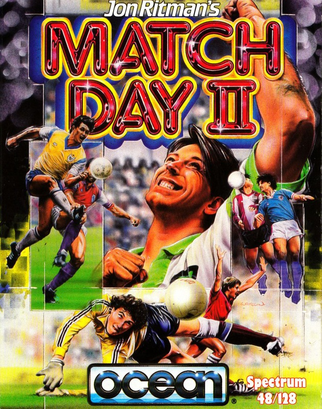
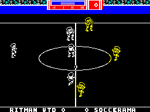
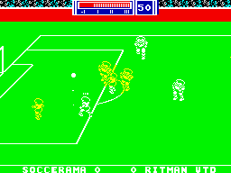
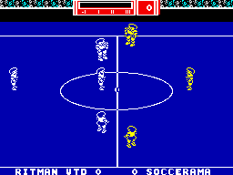

Match Day II


{kind=link}

| Publisher: | Ocean |
| Price: | £7.95 |
| Year: | 1987 |
| Source: | CRASH, Issue 48 |

Football, as they say, Brian, is a great game, and now the jockstrap’s on, the boots are laced, embrocation glistens on muscular thighs, and Match Day II — the long-expected reworking of programmer Jon Ritman’s Match Day (86% Overall in Issue 13, famous as the one we didn’t Smash!) — is about to begin. So choose your teams and prepare to experience the full range of human emotions from ‘over the moon’ to ‘as sick as a parrot’.
Your team can take part in a cup competition, a league championship, or one-off competitions against others or the computer. The match time can be set to 5, 10 or 15 minutes par half, a skill level established and a choice made between attacking and defending tactics.

Each team has seven players, and a player gains possession of the ball when it hits him below the knee. (You can control two players at the same time if the ball is passed from one to the other.)
The power of each player’s kick is controllable, and can be locked on for shots at the goal mouth so you can use maximum force in an attempt to score.
Bouncing balls can be trapped if you carefully judge the height of the ball from the size of its shadow; dribbling and lofting are also possible, the latter done by kicking the ball while running.

And to create greater complexity and realism on the field, the Diamond Deflection System has been incorporated: when the ball strikes a player, its rebound takes into account not only the angle of the struck player, but also the direction in which he is moving and that of the ball.
If you decide to participate in a competition, fixtures are automatically decided and your opponents’ skill increased as progress is made. But a code allows the competition to be saved and returned to later — so if your team isn’t doing well you can have words with the manager.
Programmer Jon Ritman and graphics man Bernie Drummond have also worked together on the Ocean Smashes Batman and Head Over Heels (Issues 28 and 39 respectively).
CRITICISM

“Jon Ritman has excelled himself with this outstanding follow-on from Match Day; he’s obviously taken in all the constructive criticisms of the earlier game. Match Day II has every option you could ever think of, and loads more as well; the menus (all 17 of them!) are much easier and quicker to use than in Match Day, and the graphics have been improved. The back passes are a great addition — and very useful. Only the sound lets it down a little; otherwise Match Day is top of the league! (Sorry.)”
PAUL ... 94%
“Match Day II has all the good features of the earlier Match Day, adds several more and comes up with the definitive football game. There’s just about every option you could wish for — back kicks, corners, barging and two-player games are all available. The graphics are clear and well-animated, with nice little jumps when the player attempts to head a ball. And Match Day II is one of the most compelling games this year — the computer isn’t easy to beat even on the simplest of levels, so there’s plenty of gameplay, especially when you have two-player matches!”
ROBIN ... 94%
“For everyone who thinks kicking an inflated leather sphere around is fun, this will be THE game. Match Day II is a huge improvement on the original — not only is there now a vast front end of options menus, there’ve been some good changes made to the gameplay. It’s the best football game around.”
MIKE ... 84%
COMMENTS
| Joysticks: | Cursor, Fuller, Kempston, Sinclair |
| Graphics: | Functional 3-D |
| Sound: | Tune to open each match, and spot effects |
| Options: | Definable keys, two-player option, all the menus you can eat |
| General rating: | Match Day is even better the second time round — there’s more to do, and a skilled computer to beat |
| Presentation: | 96% |
| Graphics: | 84% |
| Playability: | 89% |
| Addictive qualities: | 91% |
| Overall: | 91% |